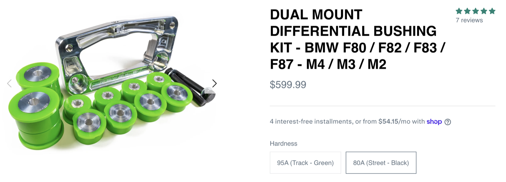
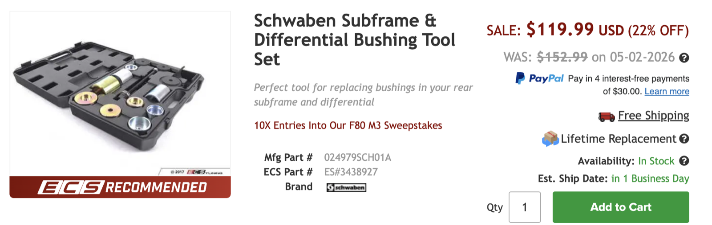
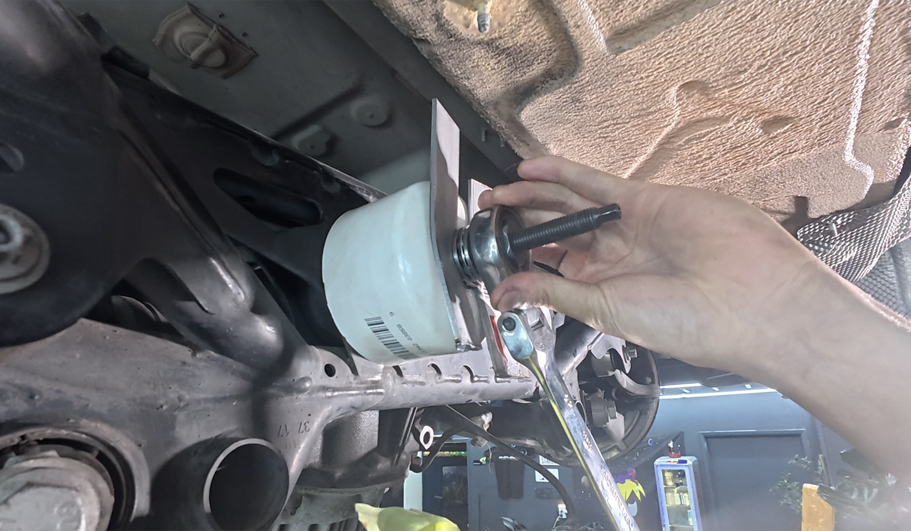

FORUMS · BMW · 2017 M3 F80
Replace the worn rubber rear differential bushings on a 2017 BMW M3 (F80) with a polyurethane dual mount kit. Same fitment on the F82, F83, F87 M4 and M2.
The factory rubber bushings crack and tear over time. Once they do, the differential moves more than it should, and you feel it.
Look at them. Inspect the bushings for cracks or rips. A bushing that is torn is no longer usable.
Test for play. Put a crowbar on the rear differential bracket and wiggle the differential. Any play means the bushing is too soft to hold it, and that movement is the clunk you hear.
One kit covers the whole job.
| PART | SOURCE | PRICE |
|---|---|---|
| Revshift Dual Mount Differential Bushing Kit, F80/F82/F83/F87 | Revshift | $599.99 |
| 4x BMW repair bolts BMW part no. 07147426660 | BMW Retailer | |
| 4x BMW repair bolt washers BMW part no. 31336776760 | BMW Retailer | |
| 4x Replacement subframe bolts BMW part no. 33302284642 | BMW Retailer | |
| Guibo bolts BMW part no. 26117527475 | BMW Retailer | |
| Guibo nuts BMW part no. 26127536563 | BMW Retailer |

BMW specifies replacing the following whenever they come out.
Kit details and price from Revshift's product page.
The old bushings are pressed in, so you need a way to push them out and the new ones in.
Schwaben silent block tool set from ECS Tuning.

The kit does one job: it pushes the old bushing out into a cup that is bigger than the bushing. If you do not have a large enough metal cup, about 3 inches across for this car, you can make your own puller. We built ours from Lowes and Home Depot parts and used it on this job. You need three pieces:

Follow in order.
The brake lines limit how far the subframe can drop, so the calipers come off first.
Replace the subframe bolts. Do not reuse them.
Use the bushing lube from the kit on the bushings.
Use the Class 10.9 bolts and the Loctite from the kit.
Use a calibrated torque wrench. Values are what we used on this job.
| FASTENER | QTY | TORQUE |
|---|---|---|
| Front diff mount | 4 bolts | 120 N·m / 88 lb-ft |
| Rear diff bolt | 1 bolt | 210 N·m / 155 lb-ft |
| Vibration damper on rear bolt | 19 N·m / 14 lb-ft | |
| Rear diff bracket | 120 N·m / 88 lb-ft | |
| Subframe | 4 bolts | 108 N·m / 80 lb-ft |
| Guibo (flex disc) | 6 bolts | 55 N·m / 40, then 90° |
This guide records how we did the job on one car. You are working under a vehicle on a drivetrain component, so support it properly and confirm torque values against BMW service data. Would you rather have us do it? Request a consultation or see our mechanical services.
The guide we followed for this job.
Ultimate Rear Diff Bushings DIY - F80/F82 by Tuned Auto
Use a calibrated torque wrench. Values are what we used on this job.